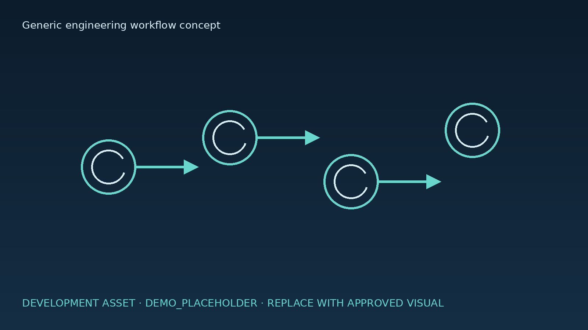

AL-SERAJ / INDUSTRIES
القطاعات
سياقات تطبيقية هندسية منظمة ترتبط بفئات الحلول المعتمدة، دون ادعاء مشاريع مكتملة أو شهادات.
سياقات تطبيقية
التصنيع الدوائي
سياق يحتاج إلى تنسيق بين العملية والغرف والخدمات والتجهيزات.
المرافق الصناعية
سياق يربط الأنظمة الكهربائية والميكانيكية والسلامة بنطاق المشروع.
المستودعات والمنشآت الحيوية
سياق يمكن أن يرتبط بالحلول المعتمدة بعد تحديد المتطلبات والأدلة.
هذه بنية قطاعات وليست إثباتًا لمشاريع منفذة أو شهادات أو علاقات عملاء.
DEVELOPMENT CONTENT MODE · DEMO_PLACEHOLDERوحدة محتوى تجريبية · مسار تقديم الخدمة
تسلسل تطويري للخدمة جاهز للأوصاف والأدلة المعتمدة.
راجع مسار الخدمة
أصل تطويري · يُستبدل بصورة معتمدة

DEMO_PLACEHOLDERهيكل توضيحي
[الوصف المعتمد مطلوب]

DEMO_PLACEHOLDERمسار تقني
[المحتوى / الدليل الحقيقي مطلوب]

DEMO_PLACEHOLDERمساحة جاهزة للاستبدال
[إدخال المشرف مطلوب]